Практичні курси · журнал «ДентАрт» 2025 №4
Реконструкція нижніх різців за Золотим коефіцієнтом
RECONSTRUCTION OF LOWER INCISORS: THE GOLDEN COEFFICIENT OF PROPORTION
Сергій Радлінський, стоматологічна клініка-студія «Аполлонія» (м. Полтава, Україна)Резюме. Застосування нашого коефіцієнта пропорційності в реконструкції нижніх різців дозволяє створити фронтальний секстант нижньої зубної дуги в пропорційності і симетричності, ґрунтуючись на співвідношенні ширини центральних і латеральних різців.
У клінічному прикладі показано покроковий протокол реконструкції нижніх різців за наявності трем, що утворилися внаслідок пародонтиту, і з попередньою ортодонтичною підготовкою. Для визначення оптимальної ширини коронок зубів у пропорційності і симетричності було використано Золотий коефіцієнт пропорційності у стандартному значенні для нижніх різців – 1,1, за яким спочатку було визначено ширину центральних різців, коронка яких вужча, і тому її ширина взята за одиницю. Потім за Золотим коефіцієнтом було визначено ширину коронки латеральних різців і отримані дані перевірені в зубному ряду за допомогою штангенциркуля. Реконструкція нижніх різців була проведена на завершення системного відновлення оклюзії в прямій реставрації.
Ключові слова: Золотий коефіцієнт пропорційності, реконструкція зубів, стирання зубів, системне відновлення зношених зубів, пряма реставрація.
Реконструкція зубів і зубних рядів виступає як альтернативою, так і доповненням до ортодонтичного лікування в пошуку уявленої естетики усмішки, естетики обличчя.
Альтернативою, оскільки ортодонтичне лікування діє комплексно і всебічно, навантажуючи і перебудовуючи не тільки зубощелепну систему, але й усе тіло, впливаючи на всі органи і системи.16 Тому за наявності незначних естетичних порушень прецизійна корекція форми окремих зубів у прямій реставрації композитом дозволяє уникнути ортодонтичного втручання з нестабільністю результату в ретенційному періоді і ризиками рецидиву.
Доповненням, оскільки ортодонтичне лікування часто стикається з необхідністю збільшення або зменшення ширини окремих зубів для досягнення результату лікування, і тоді реконструкція зубів і зубних рядів може бути доповнювальним втручанням, а наш розрахунок верхнього і нижнього фронтальних секстантів із застосуванням Золотих коефіцієнтів дозволяє прогнозовано виконати як ортодонтичне лікування, так і реконструкцію зубів композитом.2,3
Розрахунок зубного ряду дозволяє визначити можливі причини порушення пропорційності і симетричності зубів і зубних рядів, спроєктувати кінцевий результат естетичного втручання і провести реконструкцію композитом з контролем на кожному етапі за допомогою штангенциркуля і кронциркуля.
Отже, ортодонтичне лікування і реконструкція зубів композитом можуть і повинні доповнювати одне одного для досягнення оптимального естетичного результату.
Про реконструкцію зубів і зубних рядів
Чим відрізняється реконструкція зубів від реставрації?
Коли ми відновлюємо зубні тканини, втрачені через карієс, знос або травму, в наявній топографії зуба, це можна назвати реставрацією, відновленням. У реставрації зубів ми користуємося такими клінічними орієнтирами: шийка зуба, топографія дентино-емалевого з'єднання, зовнішня поверхня емалі, анатомічна форма реставрованого і симетричного зубів, анатомічна форма сусідніх зубів і ритміка зубного ряду.
Коли ми змінюємо форму коронки зуба (звуження/розширення, збільшення/зменшення, повороти/нахили), вибудовуючи нову топографію зубних тканин на додаток або зміну топографії реставрованої основи, це можна назвати реконструкцією.
Якщо реставрацію може виконувати будь-хто, у кого є диплом лікаря-стоматолога, то для того, щоб провести реконструкцію зубів і зубних рядів, потрібно мати достатньо теоретичної підготовки, практичного досвіду і природного обдарування! Тому реконструкцію ми відносимо до поняття «художньої реставрації», яка, по суті, є авторською стоматологією.5
Щоб спланувати реконструкцію зубів, потрібно уявити (намалювати, отримати рентгенограму) початкову топографію зубних тканин у коронці зуба, потім уявити кінцеву топографію зубних тканин у новій формі коронки, яка має бути створена, далі уявити, які наявні зубні тканини слід вирізати (адже препарування зуба є хірургічним втручанням) або доповнити штучними зубними тканинами, щоб досягти кінцевої топографії коронки, і найголовніше, зрозуміти, чи вартує та шкода, яка буде заподіяна здоров'ю, цього естетичного досягнення, на яке сподіваються лікар і пацієнт…
Стандартні зуби як система координат
Для оцінки клінічної ситуації і планування остаточного результату ми користуємося поняттям стандартних зубів. Це уявлення запозичене в доктора Ніколаса Єдинакевича (Ліверпульський університет, Велика Британія) – про те, що розмір зубів і зубних дуг не залежить від розміру скелета людини, тобто більшість людей мають зуби абсолютно однакового розміру, і перевірено нами протягом 30 років клінічної практики, щоб дійти переконання, що поняття стандартних зубів працює.
Це поняття ми не зустрічали в літературі, де вивчення розмірів коронок зубів представлене у звичній математичній моделі «середнє значення і ±», де плюс/мінус приховує реальні дані кожної обстеженої людини. Це як середня температура тіла по лікарні або середня зарплата в країні…
Стандартні розміри зубів ми використовуємо як систему координат, і статистична задача мала б полягати в тому, який відсоток людей у популяції має зуби стандартного розміру… Але цим поняттям можна успішно користуватися на клінічному прийомі: якщо зуби меншого розміру, ніж стандартні, то в пацієнта є треми/діастема, якщо зуби більшого розміру, то в пацієнта – скупченість зубів. Звичайно, фронтальні секстанти зубних дуг теж бувають різними, але зазвичай довжина дуги між іклами відповідає розміру стандартних зубів. Це дуже дивно, але це працює!
У клінічному випадку, який далі описаний у цій статті, довжина зубної дуги між іклами виявилася трохи більшою за стандарт, а ширина коронок зубів – меншою за стандарт.
Верхні і нижні, передні і бокові зуби до реставрації
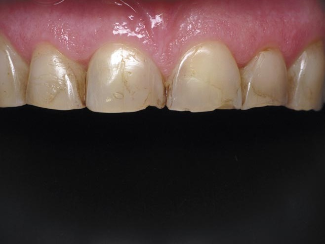
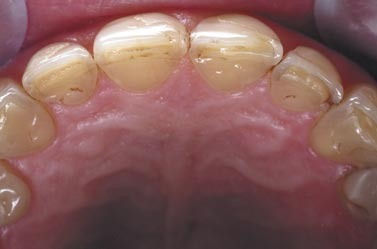
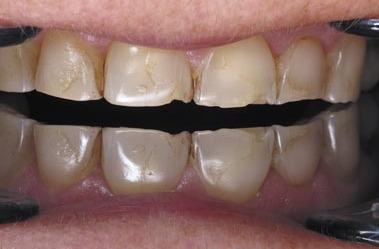
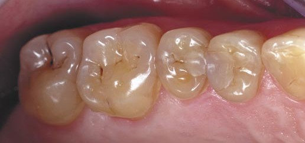
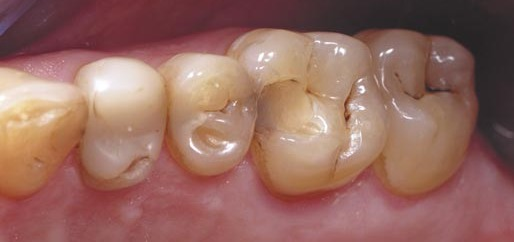
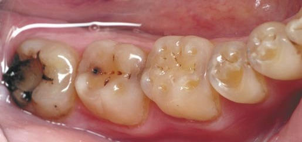
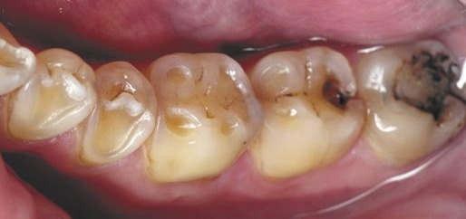
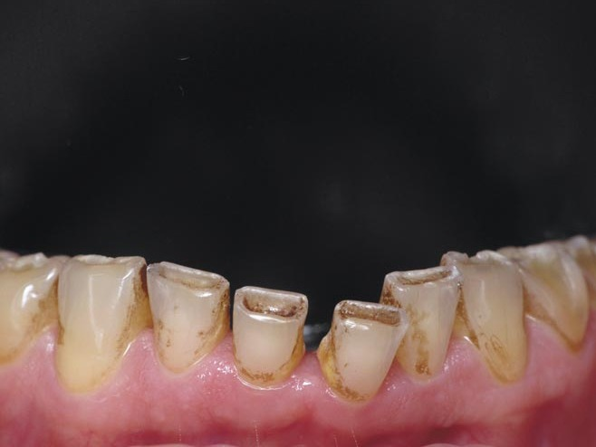
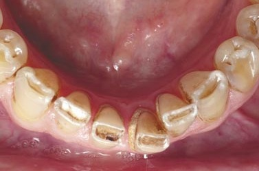
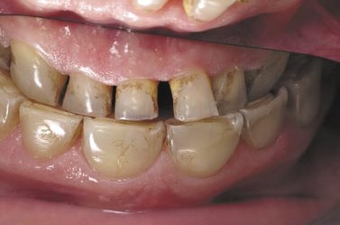
Прикус з трьох сторін, позиції оклюзії і флуоресценція
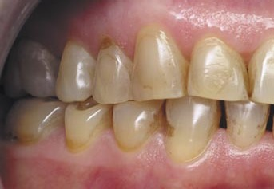
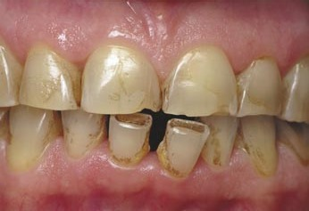
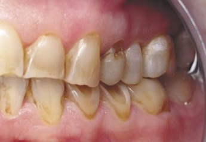
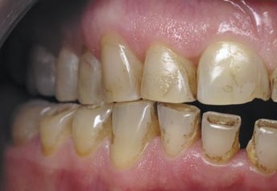
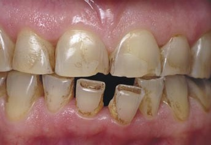
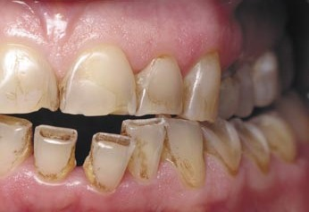
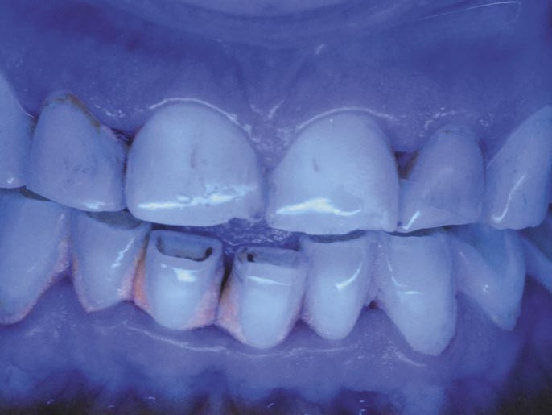
Цей клінічний випадок пов'язаний зі значним стиранням передніх зубів і середнім стиранням бокових зубів у пацієнтки 60 років з подальшим системним відновленням оклюзії композитом у прямій реставрації.
Верхні передні зуби симетрично зношені до рівня повного відкриття дентину по різальних краях і горбках іклів. У бокових секстантах зуби зношені до широкого оголення дентину: опорні горбки, передусім, премолярів і перших молярів, у других молярах рівень стирання оклюзійної поверхні з точковим відкриттям дентину, верхні треті моляри відсутні, нижні треті моляри мають великі пломби з крайовим профарбовуванням на оклюзійній поверхні.
Нижні передні зуби стерті на третину з відкритим дентином по різальному краю. Центральні різці зміщені вестибулярно, особливо зуб 31. На цих зубах є обширні відкладення зубного каменю і ознаки локального запалення ясенного краю. Між верхніми і нижніми різцями фіксується пряме співвідношення, перекриття верхніми центральними різцями нижніх відсутнє.
Прикус прямий з нейтральним ключем оклюзії справа і з мезіальним ключем оклюзії зліва. Це просто опис співвідношення коронок антагоністів перших молярів, що утворюють великий ключ оклюзії, оскільки при такому стиранні зубів не можна оцінити фісурно-горбкове співвідношення зубів. Співвідношення середньої лінії верхнього і нижнього зубних рядів не визначається через стан нижніх різців.
У правій, передній і лівій крайніх позиціях оклюзії визначається множинний контакт між верхніми і нижніми зубами через втрату анатомічної форми коронок у результаті стирання.
Усі зуби вітальні, стан ясенного краю цілком прийнятний, за винятком крайового пародонта навколо нижніх різців.
Флуоресценція передніх зубів має прийнятний рівень, в ультрафіолетовому світлі виявляється пломба на медіальній поверхні зуба 12, що пояснює різницю в ширині коронок верхніх латеральних різців. Органіка у відкладеннях зубного каменю призвела до його незвичного кольору в ультрафіолеті.
Після реставрації всіх верхніх зубів
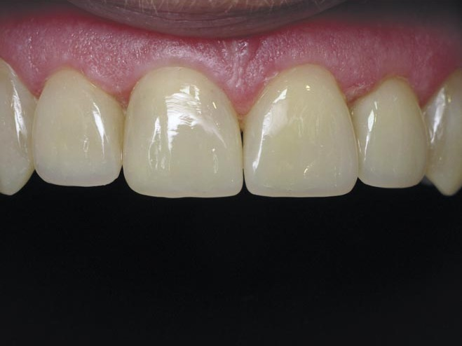
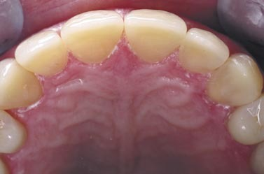
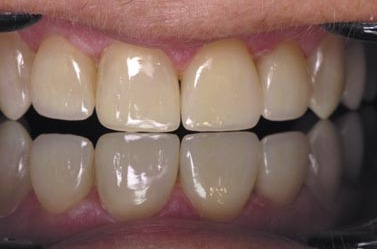
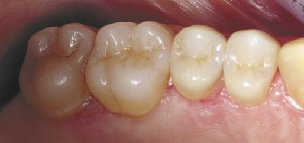
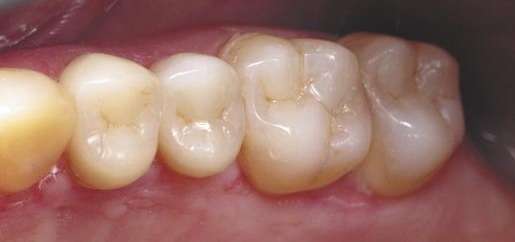
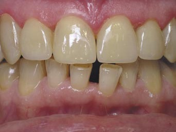
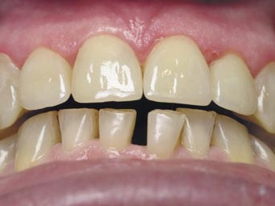
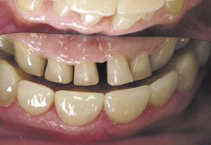
Перша реставраційна сесія тривала 3 робочі дні за алгоритмом згідно з нашим стандартним протоколом для системного відновлення оклюзії в прямій реставрації.6
Спочатку були відновлені ікла, орієнтуючись на топографію втрачених зубних тканин. Відновлені ікла перевірені за висотою штангенциркулем і на симетричність за допомогою оклюзійного дзеркала, встановленого на премолярах.
Далі були відновлені моляри і премоляри в правому боковому секстанті, потім у лівому боковому секстанті, орієнтуючись на топографію зубних тканин і з перевіркою симетричності оклюзійним дзеркалом.
Верхні різці відновлені на завершення реставраційної сесії, орієнтуючись на топографію відновлюваних зубних тканин, площину оклюзійного дзеркала і із застосуванням стандартного Золотого коефіцієнта пропорційності для верхніх різців.8,9
Фінальні клінічні фото після завершення реставраційної сесії показують однаково блискучу поверхню композиту і полірованої емалі, різальні краї центральних різців і горбки іклів перебувають у площині оклюзійного дзеркала, встановленого на премоляри, латеральні різці відстоять від площини оклюзійного дзеркала. Завдяки відновленню анатомічної форми бокових зубів створено певний простір між верхніми і нижніми передніми зубами.
Пацієнтка направлена на ортодонтичне лікування за місцем проживання.
Після реставрації нижніх бокових зубів
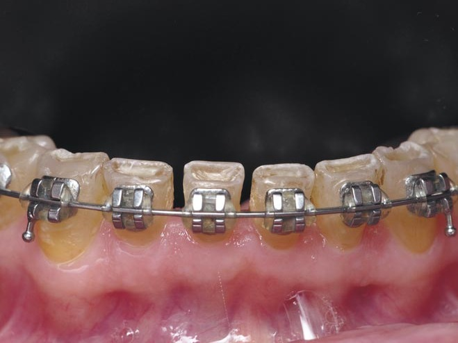
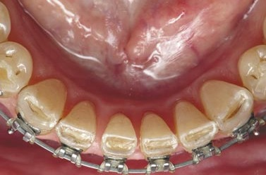
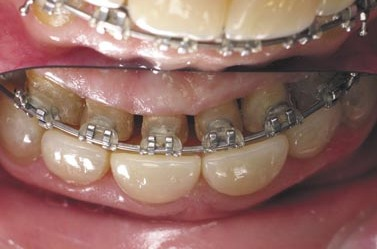
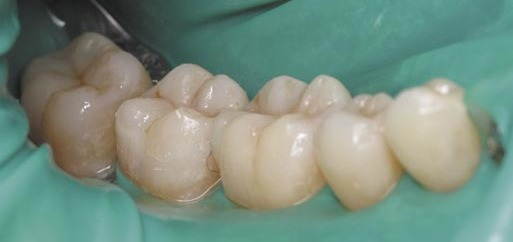
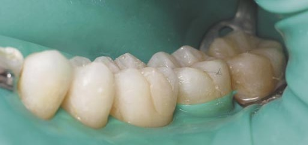
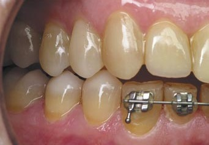
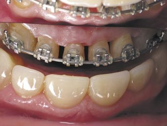
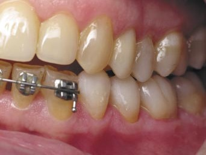
Друга реставраційна сесія була призначена через 4 місяці, тому що знадобився час для підготовчого ортодонтичного лікування…
Верхні фото демонструють зуби нижнього фронтального секстанта: тепер усі різці в зубній дузі, але з різною відстанню між ними.
Фото бокових зубів, ізольованих рабердамом, показують анатомічну форму коронок безпосередньо після відновлення з орієнтацією на топографію відновлюваних зубних тканин. Після кожної перерви тривалістю 45 хвилин ми перевіряли оклюзію копіювальною фольгою 8 мкм, домагаючись змикання всіх зубів опорними горбками в статичній оклюзії і прибираючи контакти, які з'являлися на напрямних і мають вступати в контакт тільки в динамічній оклюзії.
Нижні фото показують співвідношення бокових зубів на момент завершення їх відновлення, тому що вибіркова адаптація триває перед усіма реставраційними таймами після 45-хвилинної перерви, необхідної для нормалізації позиції нижньої щелепи. Простір між верхніми і нижніми різцями знову було збільшено для фінішного етапу відновлення оклюзії.
Уся увага на центральну лінію зубних рядів, співвідношення верхніх і нижніх іклів і перекриття нижніх бокових зубів верхніми.
Важливо: ми завжди реставруємо треті моляри, якщо для цього є найменша можливість, оскільки рефлекторно вони пов'язані з життєво важливими внутрішніми органами, такими як серцевий м'яз і тонкий кишечник!
Реставрація правого нижнього ікла
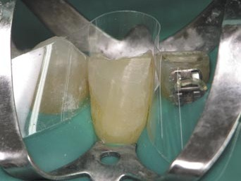
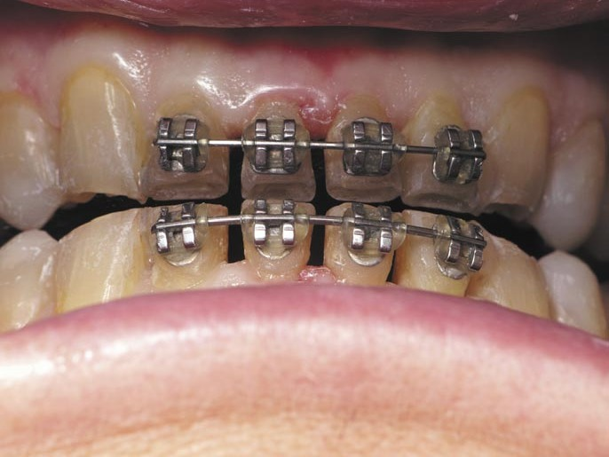
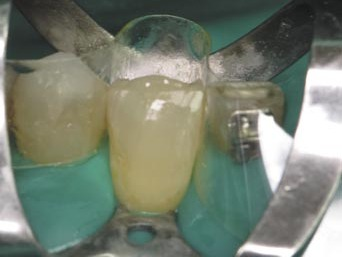
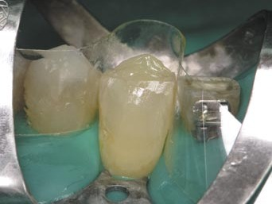
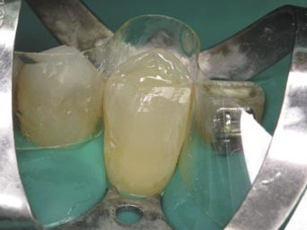
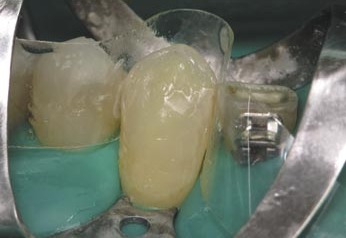
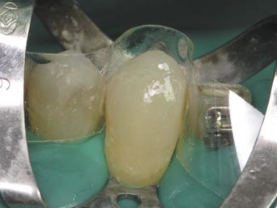
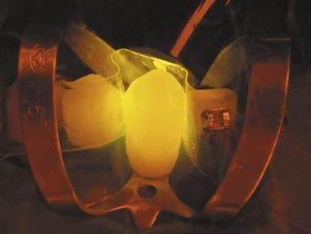
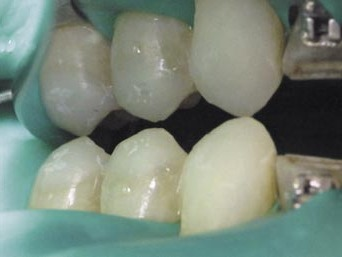
Перед відновленням нижніх іклів, які мають завершити латеральні співвідношення бокових зубів, важливо переконатися в паралельності іклів і різців за допомогою оклюзійного дзеркала, встановленого на бокові зуби. Оскільки нижній зубний ряд сагітально ввігнутий по кривій Шпеє16 і оклюзійне дзеркало можна встановити тільки на 4 точки, слід перевірити паралельність іклів і різців послідовно по других і перших молярах, по других і перших премолярах і в контакті зі зношеними різцями, як показано на верхньому фото. Виглядає так, що все добре і симетрично!
Після ізоляції, препарування, фіксації клампом і адгезивної підготовки, включно з покриттям текучим композитом поверхні дентину, правий ікло відновлений за топографією втрачених зубних тканин, починаючи з відновлення дентину в центрі коронки, потім була відновлена оральна емаль у два шари, за нею – вестибулярна емаль, кожен етап відновлення фіксували на фото.
Полімеризаційною лампою можна перевірити, що отримана опаковість реставрації не відрізняється від опаковості реставрованої основи. Якщо це так, тоді й колір реставрованого зуба не матиме відмінностей між природною і реставрованою частинами.
Оклюзійне дзеркало, встановлене на других премолярах, показує, що перший премоляр відстоїть від площини дзеркала через ввігнуту криву Шпеє в нижньому зубному ряду.
Реставрація лівого нижнього ікла
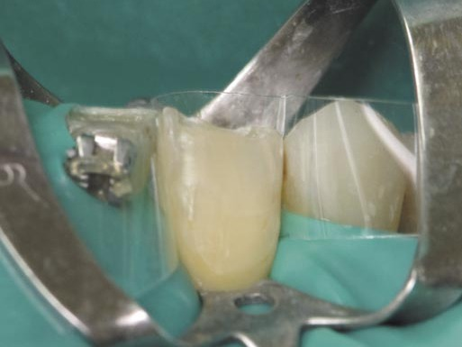
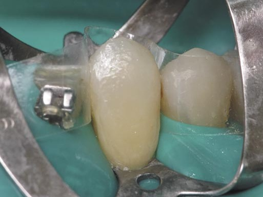
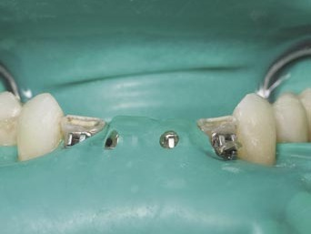
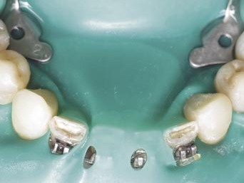
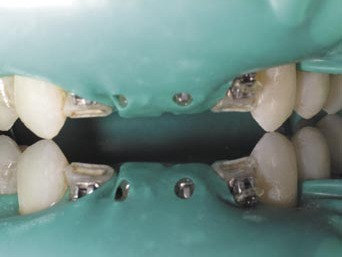
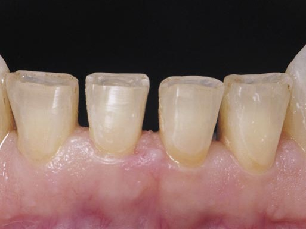
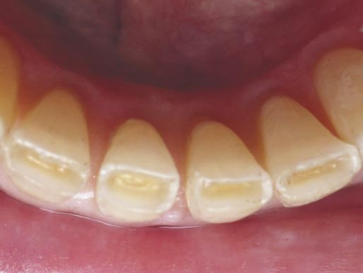
Відновлення лівого нижнього ікла виконали за тим самим алгоритмом, орієнтуючись не тільки на топографію втрачених зубних тканин, але й на фото кожного етапу реставрації правого ікла. Тому відновлення другого ікла технічно можна закарбувати на фото тільки двічі – до і після завершення реставрації.
Підтвердження паралельності позиції горбків обох іклів важливе для перенесення референтних точок з бокових зубів на ікла з подальшим використанням у побудові різальних країв різців. Це підтвердження виконане на фото у фронтальній площині, оклюзійній площині і в оклюзійному дзеркалі.
Підтвердити однакову висоту правого і лівого ікла за допомогою штангенциркуля можна тільки після зняття системи ізоляції, тому після відновлення і перевірки іклів має бути обов'язкова перерва для нормалізації позиції нижньої щелепи.
Препарування нижніх різців включало видалення склерозованого і пігментованого дентину по різальних краях кулястим алмазним бором звичайної зернистості, видалення фінішним алмазним бором відшарованих емалевих призм по оральному краю, формування внутрішніх скосів емалі по проксимальних поверхнях і формування зовнішнього скошеного краю по вестибулярному краю емалі. Зовнішня поверхня проксимальних поверхонь очищена абразивними лавсановими смужками.
Тепер для побудови пропорційних і симетричних різців потрібен розрахунок…
Розрахунок нижнього переднього секстанта
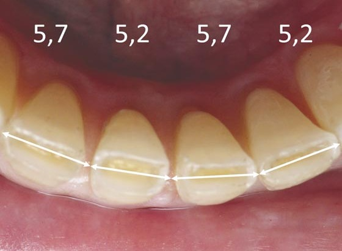
Визначення довжини фронтального секстанта «від ікла до ікла»
Спочатку слід визначити довжину зубної дуги у фронтальному секстанті, призначену для 4-х різців. Для цього штангенциркулем вимірюємо 4 відстані (за кількістю різців, включно з коронками і простором між ними) за будь-якими точками, які можна точно зафіксувати, починаючи від медіальних контактних пунктів іклів.
Підсумувавши дані 4-х вимірювань (5,7 мм, 5,2 мм, 5,7 мм, 5,2 мм), ми отримали довжину зубної дуги 21,8 мм, яка має бути розділена на 4 різці пропорційно і симетрично. Стандартна довжина передньої зубної дуги становить 21 мм.
Застосування Золотого коефіцієнта пропорційності нижніх різців
Щоб пропорційно і симетрично розділити 21,8 мм між 4 різцями, потрібен Золотий коефіцієнт пропорційності для нижніх різців, що відрізняється від Золотого коефіцієнта для верхніх різців.9
Якщо взяти ширину центральних різців, менших за цим розміром від латеральних, за умовну одиницю, то пропорційна ширина латеральних різців має бути більшою в 1,1 раза – це і є ідеальне значення Золотого коефіцієнта для нижніх різців.
Далі в розрахунку буде використана сума коефіцієнтів нижніх різців, яка в стандарті становить 4,2 (1,1+1+1+1,1).
Визначення пропорційної ширини центральних і латеральних різців
Розділивши довжину переднього секстанта зубної дуги 20,8 мм на суму коефіцієнтів пропорційності нижніх різців 4,2, ми отримали пропорційну ширину центральних різців 5,2 мм.
Помноживши знайдену ширину центральних різців 5,2 мм на Золотий коефіцієнт пропорційності, отримали пропорційну ширину латеральних різців 5,7 мм.
Обов'язково слід послідовно виставити на штангенциркулі значення ширини латеральних різців 5,7 мм і центральних різців 5,2 мм, щоб перевірити в зубному ряду, як вони впишуться в дугу між іклами.
Форма розрахунку
Рекомендуємо скористатися формою «Розрахунок ширини зубів нижнього переднього секстанта».
На першому етапі після внесення адміністративних даних слід внести дані в міліметрах з десятими про ширину на рівні контактних пунктів кожного переднього зуба, включно з іклами, визначені за допомогою штангенциркуля. Суму ширини чотирьох різців слід записати праворуч від основної таблиці. Уже на цьому етапі, порівнявши отримані дані вимірювання ширини передніх зубів зі стандартними, можна зробити перші висновки про причини порушення пропорційності і симетричності фронтального секстанта зубної дуги.
На другому етапі слід внести дані в міліметрах з десятими про довжину фронтального секстанта між іклами, отримані чотирма вимірюваннями за будь-якими точками. Дані чотирьох вимірювань вносяться в таблицю під номером відповідного зуба, сума чотирьох вимірювань вноситься праворуч від таблиці.
Ми вносимо дані вимірювань, які відповідають тільки різцям, ікла шириною своєї коронки не мають значного впливу на естетику зубного ряду, тому що ми бачимо лише їхній боковий профіль. За різницею між сумою ширини чотирьох різців і довжиною зубної дуги між іклами можна зробити висновок, яким саме є дефіцит місця при скупченості зубів або профіцит місця при тремах. Ідея полягає в тому, щоб розподілити дефіцит або профіцит простору між усіма різцями пропорційно і симетрично, визначивши ідеальну ширину центральних і латеральних різців між іклами для даного фронтального секстанта.
Якщо клінічно є скупченість передніх зубів, то причиною можуть бути або ширші коронки зубів порівняно зі стандартними, або менша довжина фронтального секстанта між іклами. Хоча зазвичай стоматолог одразу ж рекомендує позбутися третіх молярів…
Якщо є треми між передніми зубами, то причиною можуть бути або вужчі коронки зубів (як правило, за рахунок тонкої емалі, і це можна виявити на прицільних рентгенограмах), або більша довжина фронтального секстанта між іклами. Або зуби «роз'їхалися» після загострення пародонтиту, як у цьому клінічному випадку.
Після перевірки в зубному ряду виявилося необхідним зменшити латеральну поверхню зуба 31 на 0,1 мм, щоб звільнити необхідне місце для зуба 32, решта коронок «вписалися» в розраховану пропорційну ширину зубів.
Реставрація правого нижнього латерального різця
Зазвичай першим у парі симетричних зубів ми відновлюємо зуб, розташований справа, і в цьому відновленні фіксуємо кожен етап реставрації, щоб використати ці фото при відновленні симетричного зуба.
На відновлюваний зуб установлено кламп-метелик для фіксації завіси по шийці зуба, завіса затягнута навколо зуба професійним флосом, далі проведена адгезивна підготовка однокомпонентним дентинним адгезивом, дентин перекритий текучим композитом і відновлений опаковим відтінком мікрогібридного композиту.
Оральна стінка відновлена відтінками тіла і прозорого наногібридного композиту, і такими самими відтінками відновлена вестибулярна стінка – коронка зуба побудована в основному і уточнена відновленням контактних поверхонь.
Реставрація лівого нижнього латерального різця
Так само була відновлена коронка лівого латерального різця.
Кожна з контактних поверхонь була відновлена двома різними композитами, мікрогібридним у пришийковій зоні і наногібридним на решті поверхні, за допомогою індивідуально контурованих об'ємних лавсанових матриць з одночасною полімеризацією обох композитів.
Латеральні контактні поверхні побудовані в контакті з медіальною поверхнею іклів, і після відновлення медіальної поверхні латеральних різців ширина коронки кожного з них була доведена під контролем штангенциркуля до 5,7 мм, розрахованих з використанням Золотого коефіцієнта.
В оклюзійному дзеркалі видно, що висота коронок латеральних різців трохи менша за висоту коронок іклів і однакова справа і зліва.
Реставрація правого нижнього центрального різця. Рентгенівський контроль крайової адаптації реставрацій
Реставрація лівого нижнього центрального різця
Перед відновленням центральних різців, ширина коронок яких має становити розраховані 5,2 мм, відповідність простору для цих зубів ще раз була перевірена штангенциркулем.
Далі в описаній послідовності етапів реставрації правого латерального різця була відновлена коронка правого центрального різця і його латеральна поверхня в щільному контакті з латеральним різцем.
Повторно перевірено відповідність простору для лівого центрального різця, і відновлена його коронка з латеральною поверхнею в такому самому щільному контакті з латеральним різцем.
Дві медіальні контактні поверхні обох центральних різців були відновлені послідовно під контролем штангенциркуля, починаючи з ширшого зуба, для збереження достатнього простору для внесення композиту на другу контактну поверхню. На завершення, центральні різці склали середню лінію зубного ряду.
Для перевірки крайової адаптації реставрацій виконані три прицільні рентгенівські знімки нижніх різців із трьох різних напрямків, перпендикулярно до центральних різців і кожного латерального різця.
Коронки нижніх різців пропорційні і симетричні і візуально складають з боковими зубами єдиний ансамбль нижнього зубного ряду, в оклюзійному дзеркалі простежується однакова дистанція від різальних країв нижніх різців до площини оклюзійного дзеркала з акцентом на іклах як функціонально активних зубах.
Верхні і нижні, передні і бокові зуби після реставрації
Прикус з трьох сторін, позиції оклюзії і флуоресценція
Системне відновлення оклюзії в прямій техніці композитом нарешті завершено! Цей проєкт відновлення був реалізований протягом двох приїздів до клініки-студії «Аполлонія» на дві реставраційні сесії.
Усі реставровані зуби залишилися вітальними і без післяопераційної чутливості завдяки інфільтрації зубних тканин дентинним адгезивом і закриттю оголеного дентину штучною емаллю.
Верхні передні зуби пропорційні і симетричні, розташовані в зубній дузі правильної форми, і центральні різці та ікла перебувають в одній площині з горбками верхніх премолярів.
У бокових секстантах усі зуби мають відновлену анатомічну форму жувальної поверхні, яка, ми вважаємо, була такою після формування постійного прикусу. Зверніть увагу на вираженість Crista Obliqua на верхніх перших молярах і дистального вестибулярного горбка на нижніх перших молярах, які разом мають блокувати дисталізацію нижньої щелепи при змиканні зубів.16
Нижні передні зуби розташовані в зубній дузі симетрично і пропорційно, їхня позиція закріплена ортодонтичним ретейнером. Між верхніми і нижніми різцями фіксується ортогнатичний контакт з коректним перекриттям нижніх різців верхніми. Завдяки анатомічній формі нижніх різців для міжзубних сосочків створено анатомічний простір, який вони мають заповнити протягом кількох місяців, зменшивши/закривши «темні трикутники» за умови достатньої індивідуальної гігієни.
Прикус ортогнатичний, однак зліва ключ оклюзії залишився з мезіальною тенденцією. Середня лінія нижнього зубного ряду зміщена вправо, і це зміщення таке саме в передній позиції оклюзії.
У правій, передній і лівій крайніх позиціях оклюзії визначається функціональний ізольований контакт між верхніми і нижніми зубами з акцентом на центральні різці й ікла. З флуоресценцією передніх зубів усе добре – ми не бачимо різниці між кольором емалі і композиту у світлі ультрафіолетової лампи!
З нашого клінічного досвіду: після завершення системного відновлення всіх зубів і прикусу настає певна рефлекторна дезорієнтація, що унеможливлює прецизійне доопрацювання оклюзії. Тому приблизно через місяць ми призначаємо обов'язковий візит до клініки для уточнення оклюзії, коли й пацієнти вже можуть указати на певні незручності, і ми можемо перевірити оклюзію, визначаючи баланс жувальних м'язів за допомогою електроміографа.
При уточненні оклюзії шляхом зменшення горбків і нанесення додаткових фісур у статичній оклюзії слід залишити діючими контактні точки тільки на жувальній поверхні опорних горбків. У статичній оклюзії слід усунути всі контактні точки на жувальній поверхні напрямних горбків і зовнішній поверхні опорних горбків, які мають вступати в контакт між антагоністами тільки в динамічній оклюзії.
Жувальні м'язи негайно реагують на найменшу корекцію оклюзії, тому ми проводимо корекцію горбків, не знімаючи електродів, і після кожної корекції робимо новий запис балансу жувальних м'язів.
Щорічний моніторинг стану реставрованих зубів і прикусу включає визначення балансу жувальних м'язів.
Висновок
У підсумку, у межах системного відновлення оклюзії в прямій техніці композитом для відновлення нижніх різців були проведені ортодонтична підготовка, переміщення нижніх різців у зубну дугу, за допомогою розрахунку фронтального секстанта із застосуванням Золотого коефіцієнта була визначена оптимальна ширина коронок нижніх різців для заданої довжини зубної дуги від ікла до ікла, і відповідно до розрахунку під контролем штангенциркуля на кожному етапі реставрації були закриті треми між нижніми різцями і таким чином відновлена симетричність і пропорційність фронтального секстанта зубної дуги.
Відновлення оклюзії в прямій реставрації композитом ми відносимо до художньої реставрації, це доступно спеціально підготовленим стоматологам без ліміту часу і матеріалів в авторських клініках з оплатою за ім'я стоматолога.5 Перед цим практичні курси в теорії мають бути продовжені практичними курсами в клініці.
Автор дякує Вірі Каюковій (м. Дніпро), лікарці-ортодонту, за співпрацю і виконання ортодонтичної частини в цьому клінічному прикладі системного відновлення оклюзії.
Цей клінічний випадок був опублікований у постерній програмі 6-ї Бієнальної зустрічі Міжнародної академії адгезивної стоматології, яка відбулася 11–12 липня 2025 року в м. Сіетл (США).
Література
- Радлінський С., Новіков В., Смажило С. Ортопедичні аспекти реставрації зубів композитами // М-ли Респ. наук. конф. Актуальні питання стоматології дитячого віку і ортодонтії. – Полтава, 1993. – С. 118–119.
- Радлинский С. Реконструкция зубов в адгезивной технике // ДентАрт. – 1997. – № 2. – С. 18–27.
- Радлинский С. Реконструкция зубного ряда // ДентАрт. – 1997. – № 3. – С. 53–66.
- Радлинский С. Цифровая фотография и биомиметика // ДентАрт. – 2002. – № 4. – С. 30–40.
- Радлинский С. Виды прямой реставрации зубов // ДентАрт. – 2004. – № 1. – С. 33–40.
- Радлинский С. Системное восстановление высоты всех зубов при повышенной стираемости // ДентАрт. – 2007. – № 3. – С. 38–48.
- Радлінський С. Реставрація контактних поверхонь верхніх передніх зубів // ДентАрт. – 2015. – № 1. – С. 18–32.
- Радлінський С. Реставрація за розрахунком: верхні латеральні різці // ДентАрт. – 2022. – № 3. – С. 6–20.
- Радлінський С., Бодаква А. Реконструкція верхніх різців за Золотим коефіцієнтом // ДентАрт. – 2025. – № 3. – С. 24–39.
- Ahmad I. Prosthodontics at Glance. – Oxford: Willey-Blackwell, 2012. – P. 57.
- Goldstein Ronald. Esthetics in Dentistry. – London: B. C. Decker Inc., 1998. – P. 228.
- Jedynakiewicz N., Martin N. Posterior Restorations – A Clinical View // The Journal of Adhesive Dentistry. – 2001. – Vol. 3. – Num. 1. – P. 101–110.
- Rufenacht C. R. Fundamentals of Esthetics. – Chicago: Quintessence Publ. Co., 1990. – P. 116–119.
- Radlinsky Serhiy. Crowded Teeth Elimination: Proportional and Controlled Narrowing of Upper Incisors // J Dental Sci Res Rep. – 2022. – Volume 4(3): – P. 1–11.
- Radlinsky Serhiy. Spatial Guidelines in Systemic Restoration of Teeth: Case Report // J Dental Sci Res Rep. – 2023. – Volume 5(4). – P. 1–13.
- Slavichek Rudolph. Chewing organ. Functions and disfunctions. – M: Azbuka, 2008. – P. 283–305, 354–424.
Читайте також: Реконструкція верхніх різців за Золотим коефіцієнтом — «ДентАрт» 2025 №3.